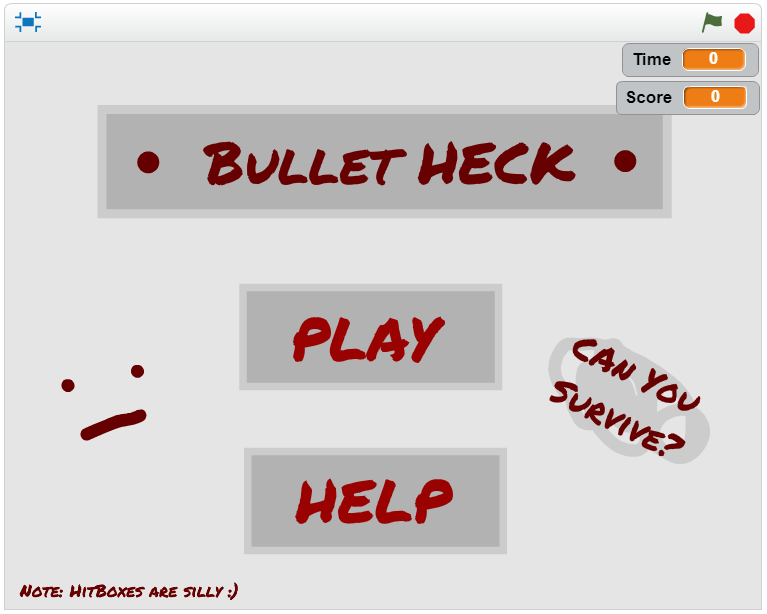
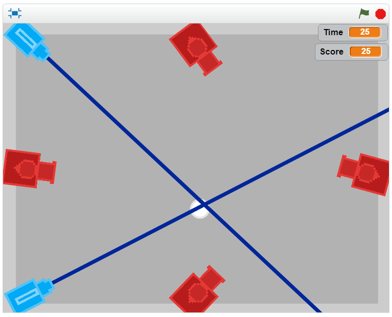
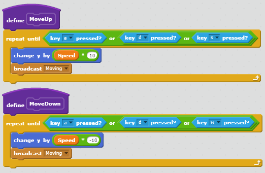
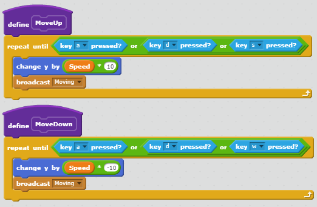

My Portfolio
Game: Bullet HECK
 Description:
In "Bullet HECK" the objective to survive as long as you can by dodging
every obstacle and using items to your advantage. To increase your
score, keep staying alive. The "+" power-up adds 10 to your score
while the "-" power-up subtracts 10. The randomness of this game occurs
in how the items appear. When the game begins, there is a randomized
amount of time before each set of items are activated by a broadcast. There
is also randomization of when and where the items appear after the broadcast.
The game becomes more difficult the longer the player survive as more
enemies and items appear. The game ends when the player is hit by an enemy.
Reflection:
I made "Bullet HECK" because I was bored and wanted to make a game that
would be hard for players to win. My inspiration for the game came from
games that I have played or have seen including "The Binding of Isaac",
"Enter the Gungeon", and "Undertale". I was successful in creating a
game that would be challenging to beat, withmy average time being only
about 30 seconds. I was also successful in programming the enemies according
to my original vision. I was unsuccessful, however, in creating accurate
hitboxes and a scoring system. With help from Ms. Terry, I managed to create
a better hitbox system but it is still a little faulty. The scoring system
I fixed by separating it from the "Time" value. If I had more time,
I would definitely improve the hitbox system, and maybe add more items
to spice up the game.
Algorithm:
This algorithm, though separated into two, is an important set of
step-by-step procedures that allow the game enemies to attack the player.
First, when the sprite receives the broadcast "Shoot1" the sprite
will appear. Then, it will continuously point towards the player,
wait 1 second, and create a clone. Once a clone is created, it
moves 10 steps and shrinks in size by 95%; this will be
repeated 40 times and afterwards the clone is deleted.
More Blocks:
 
